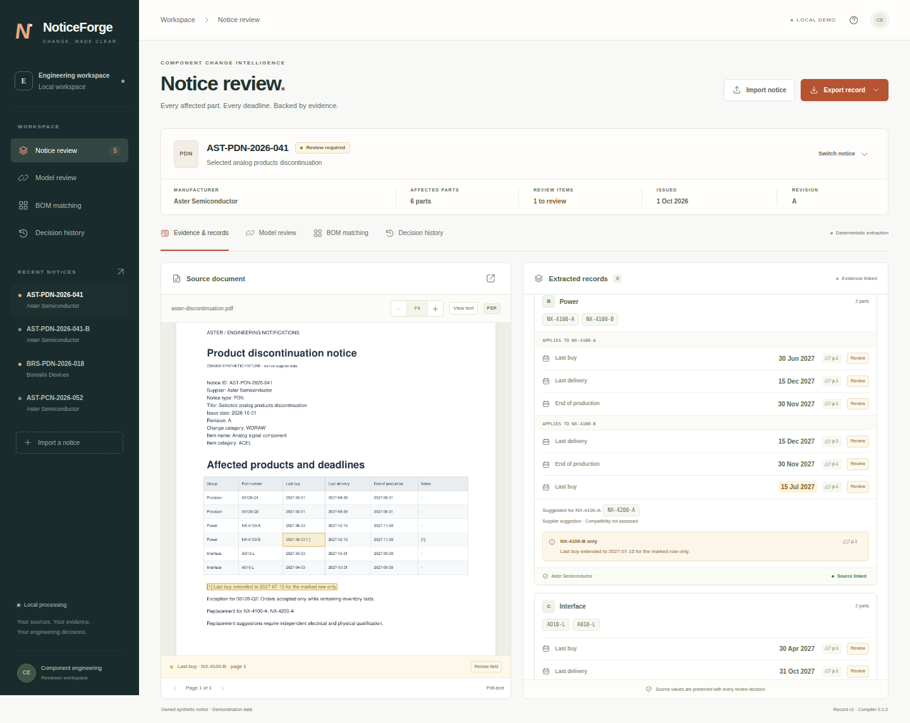

Keep the details attached.
Exact part numbers, different deadlines, row footnotes, and inventory exceptions stay with the records they describe.
Semiconductor change notices
A local workspace for turning product-change and discontinuance notices into records you can check, correct, and use.

Exact part numbers, different deadlines, row footnotes, and inventory exceptions stay with the records they describe.
Check source evidence, resolve ambiguous dates, and retain the original value alongside every correction.
Match literal identifiers and manufacturers, then export canonical JSON or a supported smartPCN XML body.
Get started
Install Python 3.12 and uv, then run:
git clone https://github.com/ah682/noticeforge.git
cd noticeforge
make demo
Open http://127.0.0.1:8877. Five fictional notices are included. Uploaded documents
and review history stay in your local database.